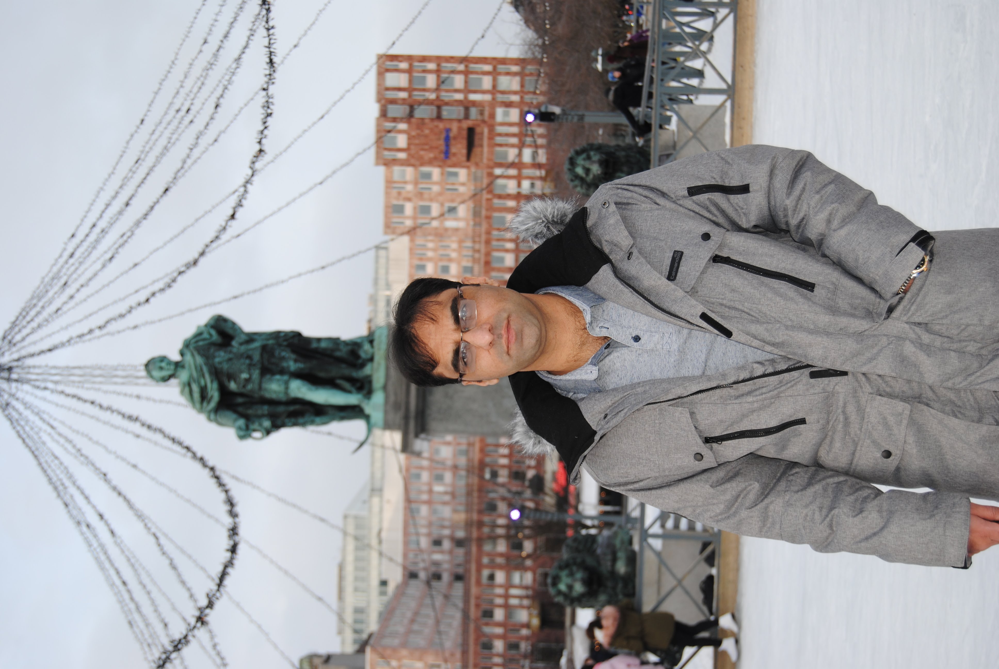

About Me
Let me tell you something about myself ...
 I am a JavaScript, MERN Stack Web Developer currently residing in Tampere, Finland. I have a passion for building interactive and user-friendly web applications. My professional web development journey started with the Full Stack trainee position at Opiframe Oy. After completion, I joined CySec Ice Wall Oy as a trainee and worked as a Cyber Security Data Analyst.
I am a well-organized person and can work on projects independently. I keep on learning and improving myself technically and personally. I can communicate effectively in English and can have a general conversation in Finnish.
In a free time, I love travelling, hiking and playing indoor/outdoor sports. I also like to make new friends and experience new culture and traditions.
You can also download my complete CV from here Download CV
- Experience
- Skills
- Education
MSc Information Technology
Tampere University of Technology (Finland)
-
Major Subjects:
Communication Systems and Networks
-
Minor Subjects:
Information Technology
-
MSC Thesis Topic:
TorSNIP Hidden Service Proxy with end-to-end Security
BSc Telecommunication and Networks
COMSATS University (Pakistan)
-
Major Subjects:
Telecommunication and Networks
-
Minor Subjects:
Information Technology
-
BSC Thesis Topic:
Performance Evaluation of AD HOC Network protocols
CyberSecurity Data Analyst (Trainee)
CySec Ice Wall Oy
-
What I learned:
I learned new technologies i.e. SURICATA, LOGSTASH, KIBANA, ElasticSearch, and other tools.
-
What I did:
Based on the learning, I build a prototype for the company for analyzing the stored and up-coming data within the network.
MERN Stack Developer (Trainee)
Opiframe Oy
-
What I learned:
I learned new technologies i.e. ReactJS, Express JS, NodeJS and MongoDB.
Beside technical skills, I improved my Finnish language skills.
-
What I did:
Based on the learning, I build a sports website using MERN Stack